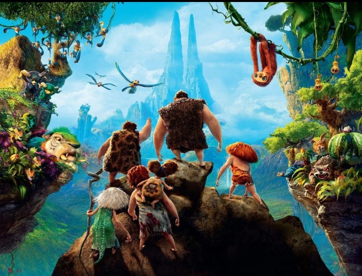
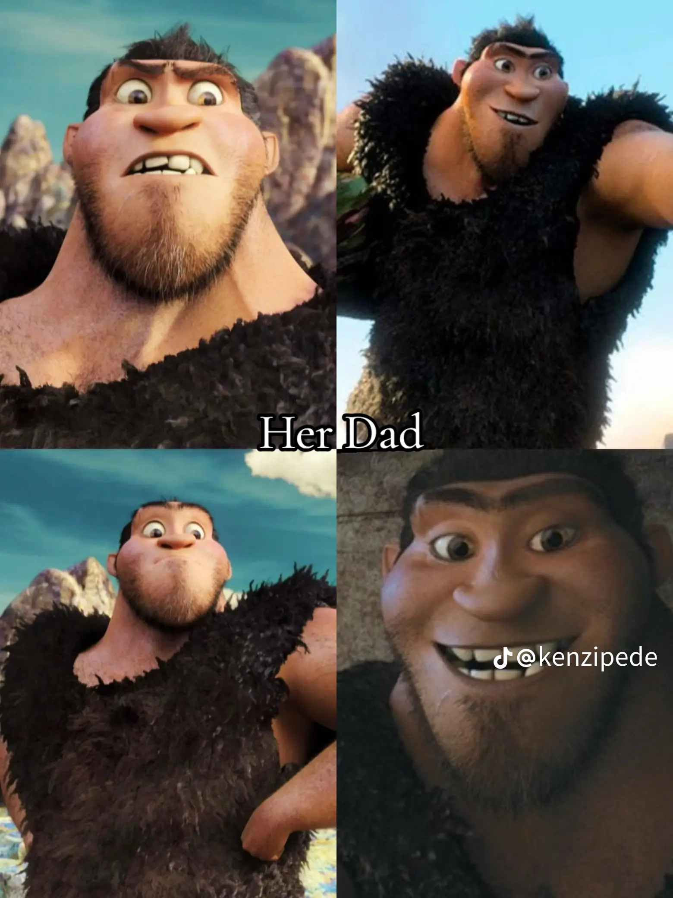
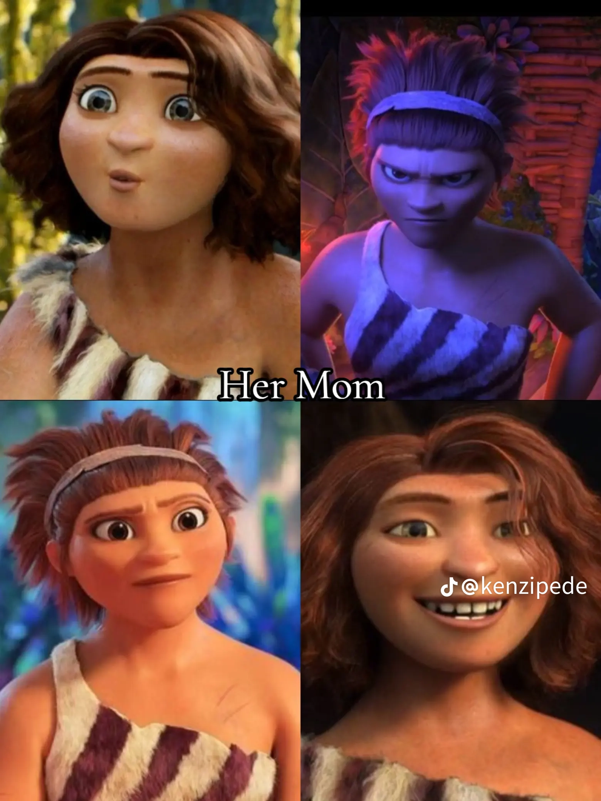
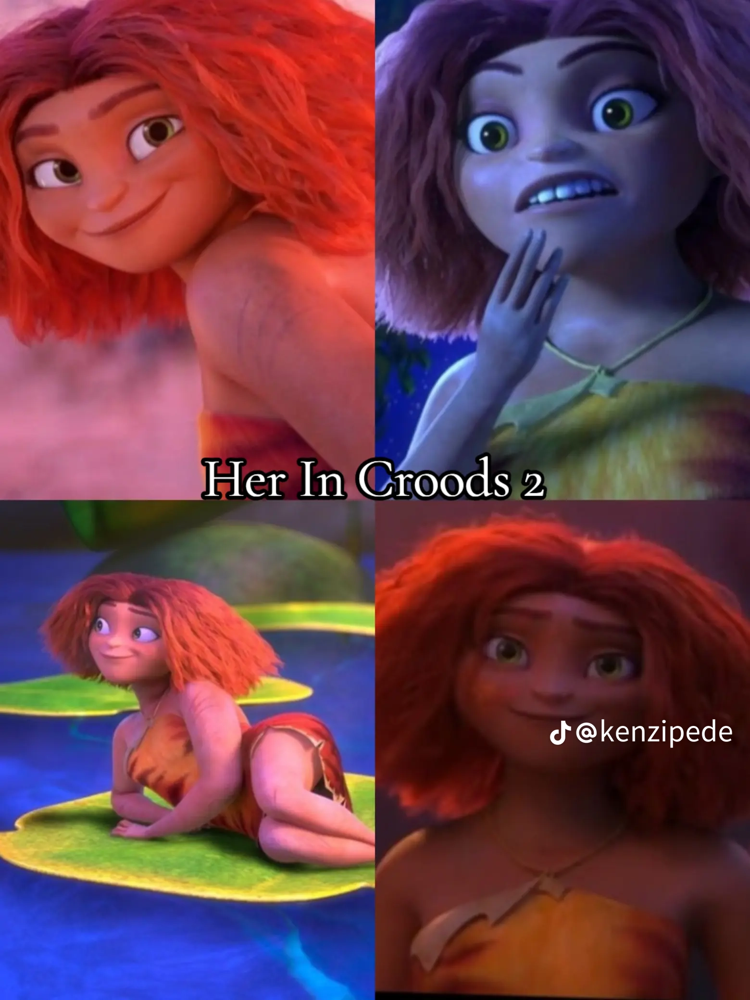
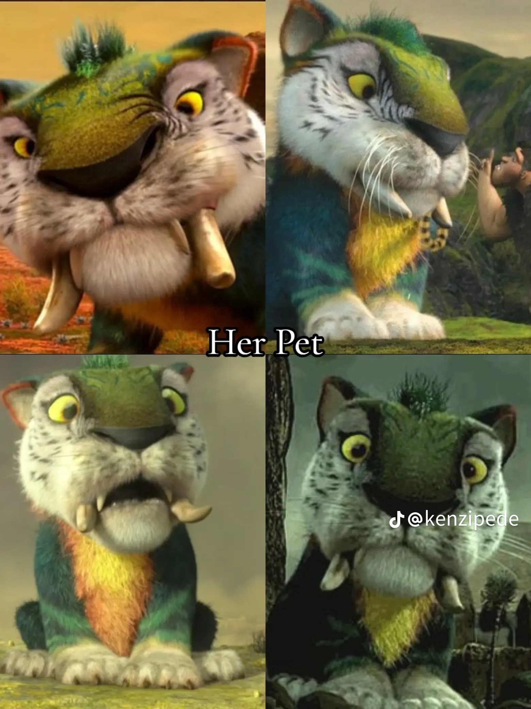
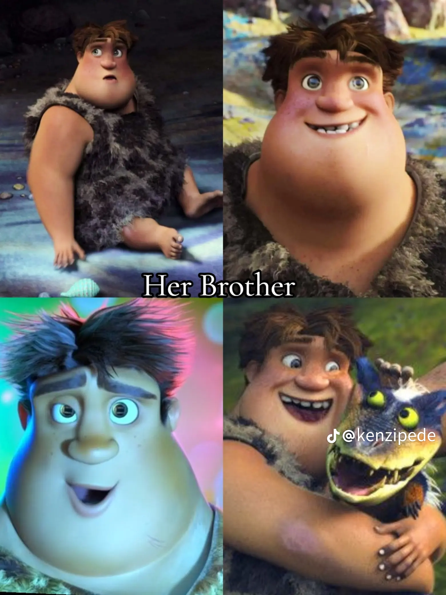
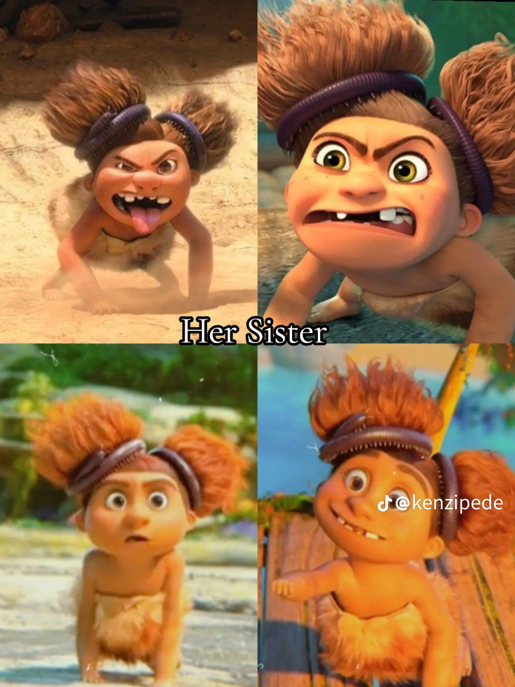
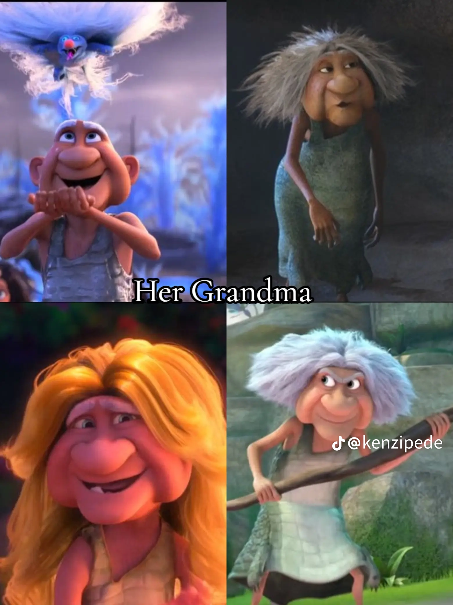
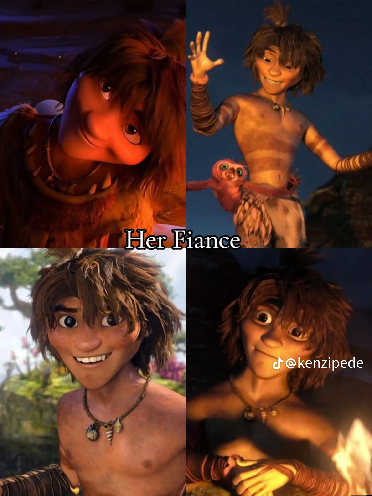
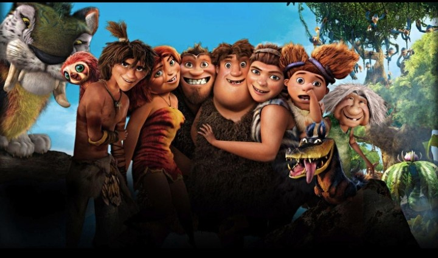

The croods is an animated storyabout a pre-historic family who lives in a cave and try to survive in a dangerous worldby hunting, gathering food and following stric rules created mainly by thier father Grug. Thier life changes when they cave is destroyed and they are forced to travel to a new place. During there journey, they meet Guy, a clever young man who warns them about changes happening in the world.

The croods are close family but they often disagree because different family members have different ideas about safty, freedom, and change. their experience teach important lessons about love, cooperation, courge, adoption and accepting new people
The family consists;
Grug Crood- the protective father. He is very cautious and believes that staying together and avoiding danger is the best way to servive.

Ugga Crood - Grug's wife and the mother of the family. She supports her family and often helps keep peace when disagreements occur.

Eep Crood - thier teenage daughter. She's adventurous, curious and wants to explore the world rather than remain inside the cave. Her pet


Thunk Crood - thier son. He is not as clever or adventurous as Eep, but he is an important and humorous member of the family.

SandyCrood - thier youngerst daughter. She's enegetic, wild and playful

Gran -Ugga's mother and the funny grandmother of the family. She is tough, outspoken, and makes funny comments.

Guy - the clever man joins them and he is Eep's fiance

When they met Guy on thier way
